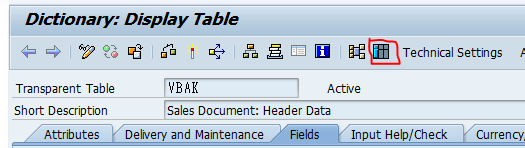

Mass-downloading table records to local
Downloading massive data from SAP GUI can be such a hassle. The consequence of waiting for SE16n to display all the data can sometimes only lead to short dumps. Here I wrote down some tips for downloading data to your local PC.
1. No ALV Use SE11, SE12 to display data because ALV display in SE16n/SE16h is not meant for large dataset. Select your table and go to contents, from "Setting" and go to "User Parameters". Choose "Standard SE16 list" and display data. Once data is displayed, System->List->Save.
2. Choose only the necessary colums From SE11, SE12, choose only the necessary colums by Settings->Format List->Choose fields.

3. SQVI, export as local file Create SQVI and from its basic mode, you see export mode can be changed. Choose excel and execute the quick viewer. Execute again after setting selection screen. It will prompt you the number of rows and you can put maximum of 999,999 records. Specify the local path and encoding and voila! It's in your local path in the blink of an eye!